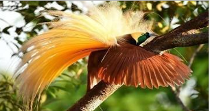

Orang Utan
Orang utan dikenal oleh habitat seluruh badannya yang berwarna merah. Satwa ini merupakan mamalia arboreal terbesar yang menghabiskan hampir seluruh waktunya di pepohonan. Langka dan keberadaannya sudah terancam punah.

Kera Emas
Monyet yang unik ini juga dikenal sebagai kera emas memiliki adaptasi yang sangat baik di daerah dingin. Lingkungan yang lembab hingga dingin, kera emas menyesuaikan dengan adaptasi yang hebat dalam penglihatan.

Burung Cendrawasih
Burung cendrawasih termasuk ke dalam hewan langka dan hanya bisa ditemukan di Papua. Burung cendrawasih punya tampilan yang sangat menarik membuat burung ini sering menjadi perburuan untuk dijadikan.